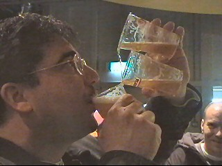

|
Roda JC - RKC (2-1) 24 januari 2004 |
De wedstrijd begint veelbelovend!
De spelers betreden het koude stadion.
Een bedroevende opkomst van RKC-supporters.
Het waren er nog geen 100.
Roda overklaste RKC. In de 13e min. scoort
Anastasiou dan ook al 1-0.
Tijd voor de sirtaki dus.
Naast Omo-power is er nu ook Yuri-power. Deze
Yuri Cornelisse scoorde verleden seizoen voor
Roda. Misschien dat Jol hem daarom de eerste
helft aan de kant hield.
Het Bocheser vrouwenfront bij praatpaal Z16.
Terwijl ik naar de uitgedoofde vlam kijk, klinkt
er plots gejuich.
Kone heeft 2-0 gescoord met een verwoestende
volley (33'). (NB: NOS-beeld vanaf overzijde).
Dit nadat hij eerder voor een leeg doel miste.
Gregoor Van Dijk heeft het met enkele RKC'ers
aan de stok.
Roda stapelde kans op kans.
Kone is er weer eens van door. Helaas heeft hij
met het doel in zicht geen enkel idee wat te doen
met de bal. Het wemelde vanavond bij Roda van
de fout-passes en slechte doelpogingen.
Een buitenspeldoelpunt.
In de tweede helft speelt RKC stukken
aanvallender en zakt Roda weer eens weg in de
wedstrijd. Het onvermijdelijke gebeurt: in de
85e min. scoort Hoogendorp 2-1.
Van Hoogendorp stond al geruime tijd droog en
is nu bevrijd van het "Kezman-syndroom".
De vermakelijke doelman Sinouh wijst zijn
ploegmakkers op de korte tijd die nog resteert.
Maar het blijft gelukkig 2-1.
En zoals de wedstrijd begon.......
K. zat vanavond zonder chauffeur :-(
Marco was de enige die de muziek in de KO leuk
vond ;-)
Aydogan en Baslanti bezochten de KO namens
de spelers.

Lucien noemt zichzelf een echte bierdrinker. Is
dit nou een tripel-bier?